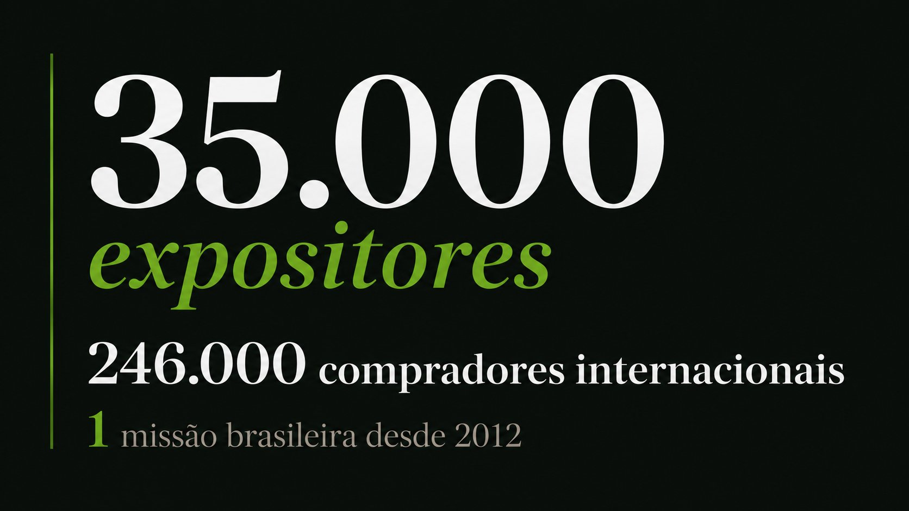

Você ouviu falar da Canton Fair. Talvez um concorrente já tenha ido. Talvez você esteja importando da China há anos mas nunca foi pessoalmente visitar seus fornecedores. Ou talvez você queira abrir um novo negócio e precisa de uma fonte confiável para começar.
Este guia foi escrito por quem levou mais de 20 empresários brasileiros à Canton Fair em outubro de 2025 — em parceria com a ACIC Chapecó. Não é teoria. É o que funciona na prática.
O que é a Canton Fair e por que ela importa para você
A Canton Fair — nome oficial: China Import and Export Fair — é realizada duas vezes ao ano em Guangzhou (Cantão), China, desde 1957. É a maior feira multissetorial do mundo: 35.000+ expositores, 1,1 milhão de m² de área de exposição e compradores de mais de 210 países.
Para o empresário brasileiro, ela representa uma oportunidade única: negociar diretamente com fabricantes chineses, sem intermediários, com preço de fábrica, amostras na mão e a possibilidade de fechar parcerias que normalmente levaria meses de e-mails para construir.
Em 2025, o Brasil foi um dos países com maior crescimento de compradores na feira — +33,2% em relação ao ano anterior. Seus concorrentes estão lá. A pergunta é: você vai estar também?
Quer ir à Canton Fair outubro 2026?
A AMO Embarque organiza missão com guia, credencial de importador e roteiro completo. Vagas limitadas.
Datas e fases — outubro/novembro 2026
A Canton Fair de outubro 2026 (140ª edição) acontece em três fases, cada uma com setores específicos. É fundamental saber em qual fase o seu negócio se encaixa antes de comprar passagem.


Visto para a China: o que mudou em 2025
Esta é a melhor notícia dos últimos anos para o empresário brasileiro: desde 1º de junho de 2025 a China isenta brasileiros de visto para estadas de até 30 dias, a negócios ou a turismo. É uma política unilateral chinesa, hoje prorrogada até 31 de dezembro de 2026 — desde 11 de maio de 2026 o Brasil isenta chineses na mesma linha. Para a edição de outubro de 2026 você precisa apenas de:
- Passaporte brasileiro válido com pelo menos 6 meses de validade após a data de retorno
- Bilhete de ida e volta confirmado
- Comprovante de hospedagem (o hotel da missão já serve)
- Dinheiro ou cartão para as despesas pessoais
Nada de consulado, nada de formulário online, nada de espera. A entrada é feita direto no aeroporto com o passaporte. A AMO Embarque orienta todos os participantes sobre o processo completo no briefing pré-viagem.
Planejando 2027? A isenção está declarada até 31 de dezembro de 2026. Para as edições de abril e outubro de 2027 a AMO orienta a documentação caso a caso, conforme a política vigente na data do embarque — e avisa cada participante assim que houver definição.
Ir sozinho ou com grupo organizado?
Esta é a dúvida mais comum — e a resposta honesta é: depende do seu objetivo. Mas para quem quer aproveitar a feira com foco em negócios, os números falam por si.
| Critério | Ir sozinho | Missão organizada AMO |
|---|---|---|
| Idioma | Inglês limitado em muitos stands. Comunicação pode ser um desafio para quem vai sozinho. | Suporte completo da equipe AMO em todo o trajeto da feira. |
| Credencial | Credencial de visitante genérico. Sem poder de negociação coletivo. | Credencial de importador + poder de negociação em grupo. |
| Roteiro | Navegação por conta própria em 19 halls. Risco de perder dias. | Roteiro curado por setor, pré-seleção de stands relevantes. |
| Logística | Hotel, traslado e alimentação por conta própria em idioma estrangeiro. | Tudo incluído: voo, hotel, traslados, check-in. |
| Networking | Experiência solo. Sem troca com outros empresários brasileiros. | 20+ empresários de setores complementares. Parcerias nascem no grupo. |
| Segurança | Sem suporte local se algo der errado. | Suporte 24h durante toda a missão. |
"Foi uma experiência fantástica, tivemos uma atenção especial da AMO Embarque em todos os trechos da viagem. Parabéns a todos os organizadores desta missão."
— Edimar Niec, Participante da Missão Canton Fair 2025Missão Canton Fair outubro 2026 — vagas limitadas
Grupo pequeno, atenção individualizada. Saída de São Paulo para todo o Brasil.
Como negociar com fornecedores chineses na Canton Fair
Negociar na Canton Fair é completamente diferente de negociar em feiras brasileiras. A cultura de negócios chinesa tem suas próprias regras — e quem as ignora paga mais caro ou sai sem fechar nada.
1. Respeito hierárquico é fundamental
Sempre cumprimente o responsável mais sênior do stand primeiro. Entregue cartões de visita com as duas mãos e leia o cartão recebido antes de guardá-lo. Isso parece detalhe, mas sinaliza profissionalismo e abre portas.
2. Nunca demonstre urgência
Mostrar que você precisa fechar rápido coloca você em desvantagem imediata. Visite o mesmo fornecedor duas vezes se necessário. Peça catálogos, amostras e diga que vai "analisar as opções" — isso é negociação chinesa.
3. O preço de tabela não é o preço real
Todo preço listado na fair tem margem de negociação. Com o apoio da equipe AMO na negociação, você consegue 15% a 30% a menos no preço inicial, além de condições de MOQ (pedido mínimo) mais flexíveis.
4. Documente tudo
Fotografe catálogos, anote o número do stand, peça cartão de visita de pelo menos dois contatos por fornecedor. Após a fair, o follow-up por e-mail é essencial para manter o vínculo.
O que levar na mala para a Canton Fair
A Canton Fair acontece em outubro — Guangzhou tem clima quente e úmido nessa época, com temperaturas entre 22°C e 30°C. Mas o interior dos pavilhões é fortemente ar-condicionado. Considere camadas.
- Passaporte válido com mais de 6 meses de validade
- Cartões de visita — leve pelo menos 200. Prefira com tradução em inglês no verso
- Mochila leve para os dias de feira — você vai caminhar muito e pegar catálogos
- Roupas confortáveis e profissionais — business casual funciona bem nos stands
- Blusa ou casaco leve para o ar-condicionado interno dos pavilhões
- Carregador portátil (powerbank) — o celular vai ser muito usado para fotos e notas
- VPN instalada — Google, WhatsApp e Instagram não funcionam na China sem VPN
- Yuan Renminbi (RMB) — levar pelo menos R$500 em yuan para pequenas despesas e gorjetas
- Adaptador de tomada — China usa padrões diferentes do Brasil
- WeChat instalado — é o WhatsApp da China. Os fornecedores usam exclusivamente
Próximos passos para garantir sua vaga
A missão AMO Embarque à Canton Fair outubro 2026 está com vagas abertas. O grupo é pequeno por escolha — para garantir atenção individualizada, suporte completo e roteiro personalizado por setor.
Se você chegou até aqui neste guia, é porque a Canton Fair já está no seu radar. O próximo passo é simples:
- Fale com nossa equipe pelo WhatsApp — resposta em até 24h
- Receba uma proposta personalizada com datas, fases e valores
- Reserve sua vaga com entrada e parcele o restante
- Participe do briefing pré-viagem com preparação completa
- Embarque de São Paulo com tudo resolvido
Pronto para ir à Canton Fair em outubro?
Fale agora com a AMO Embarque. Nossa equipe está pronta para montar sua proposta personalizada — sem compromisso.
100% gratuito · Sem compromisso · Resposta em até 24h